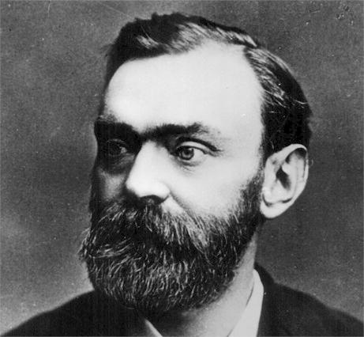

Short Biography

Tepat pada tanggal 27 November, 123 tahun silam, seorang ilmuwan bernama Alfred Bernhard Nobel mendirikan Nobel Prize, ajang penghargaan internasional bagi orang-orang yang berpengaruh dalam perkembangan sains, ekonomi, politik, serta sastra dunia. Sejak pertama kali didirikan hingga sekarang, Nobel Prize diakui sebagai ajang penghargaan tahunan yang paling bergengsi di bidang akademik. Loopers tentunya tahu beberapa nama tokoh terkenal yang pernah mendapatkan Nobel Prize, misalnya seperti Albert Einstein, Alexander Flemming, dan Ernest Hemmingway.
Tapi tahukah kalian?
Bahwa pendiri Nobel Prize adalah seorang ilmuwan yang sangat tersohor
Alfred Bernhard Nobel adalah seorang indutrialis , engineer, ber-asal dari Swedia lahir pada 21 Oktober 1833, penemu dinamit. Dia membangun jembatan dan gedung-gedung di Stockholm. Ia juga fasih dalam 4 bahasa yaitu bahasa Inggris, Perancis, Jerman, dan Rusia dengan sangat lancar.
Dia mulai melakukan eksperimen dengan nitroglycerin di awal tahun1860, yang ditemukan oleh temannya seorang ahli kimia, bernama Ascanio Sobrero orang Itali, Ia merupakan lulusan Universitas di Torino. Cairan berdaya ledak tinggi yang dianggap terlalu berbahaya untuk digunakan.